무선설비산업기사 (2012-06-03 기출문제)
1과목: 디지털 전자회로
1. 정류회로에서 리플 함유율을 줄이는 방법으로 가장 이상적인 것은?
- 반파 정류로 하고 평활 회로의 시정수를 크게 한다.
- 브리지 정류로 하고 필터콘덴서의 용량을 줄인다.
- 브리지 정류로 하고 필터콘덴서의 용량을 크게 한다.
- 전파 정류로 하고 평활 회로의 시정수를 작게 한다.
(정답률: 77%)

2. 직류 출력전압이 무부하일 때 300[V], 부하일 때 220[V]이면 정류기의 전압 변동률은 약 몇 [%]인가?
- 10.25
- 22.45
- 36.36
- 47.25
(정답률: 89%)
3. 다음 중 정전압회로의 파라미터에 속하지 않는 것은?
- 전압안정계수(SV)
- 온도안정계수(ST)
- 출력저항(RL)
- 최대제너전류(IZ)
(정답률: 84%)
4. 다음 그림과 같은 미분연산기에 Vi 입력파형을 구형파로 인가하였을 때의 출력파형은?
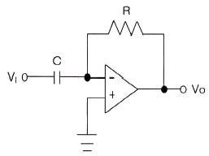
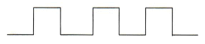
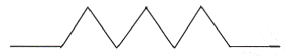
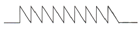
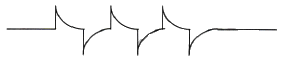
(정답률: 93%)
5. 트랜지스터 증폭기의 입력전력이 1[mW]이고, 출력전력이 2[W]일 때 증폭기의 전력이득은?
- 12[dB]
- 23[dB]
- 33[dB]
- 45[dB]
(정답률: 77%)
6. 차동증폭기에서 두입력 신호전압이 V1=V2=2[V]로 같을 때 차신호 이득 AC는 얼마인가?
- 0[V]
- 1[V]
- 2[V]
- 4[V]
(정답률: 75%)
7. B급 푸시풀 전력증폭기에서 평균 직류 컬렉터 전류는 어떻게 되는가?
- 입력신호 전압이 커짐에 따라 줄어든다.
- 입력신호 전압이 작으면 흐르지 않는다.
- 입력신호 전압이 커짐에 따라 증가된다.
- 입력전압의 대소에 불구하고 항상 일정하다.
(정답률: 81%)
8. 발진주파수에 있어서 주파수 변동의 주된 요인이 아닌 것은?
- 부하의 변동
- 전원전압의 변동
- 출력신호의 불안정
- 주위 온도의 변화
(정답률: 55%)
9. 다음 중 발진회로에서 수정 진동자를 사용하는 이유는?
- 발진 주파수의 가변이 쉽기 때문이다.
- Q가 높기 때문이다.
- 출력전압이 크기 때문이다.
- 저주파수 발생에 적합하기 때문이다.
(정답률: 84%)
10. 다음 중 누화, 잡음 및 왜곡 등에 강하고 전송 특성의 질이 저하된 선로에서 다중화에 가장 적합한 것은?
- AM 주파수분할 다중 전송방식
- FM 주파수분할 다중 전송방식
- PM 주파수분할 다중 전송방식
- PCM 시분할 다중 전송방식
(정답률: 89%)
11. 다음의 변조방식 중에서 아날로그 변조 방식이 아닌 것은?
- PPM
- PAM
- PCM
- PWM
(정답률: 88%)
12. 듀티사이클(duty cycle)이 0.1이고, 주기가 40[μs]인 경우 펄스폭은 몇 [μs]인가?
- 10
- 4
- 3
- 1
(정답률: 90%)
13. 다음 회로에 그림과 같은 펄스를 인가하였을 때 출력 파형은?
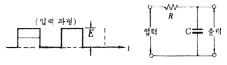
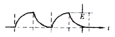
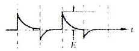
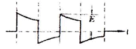
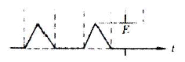
(정답률: 80%)
14. 아래와 같은 4변수 카르노도를 간략화 했을 때 논리식은?
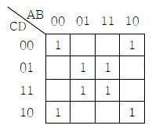
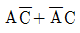
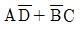
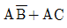
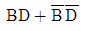
(정답률: 81%)
15. 2진수코드를 그레이코드(gray code)로 변환하여 주는 논리식으로 맞는 것은?
- OR
- NOR
- XOR
- XNOR
(정답률: 86%)
16. 10진수 45를 2진수로 변환한 값으로 맞는 것은?
- 101100
- 101101
- 101110
- 101111
(정답률: 90%)
17. 다음 중 4×1 멀티플렉서를 구성하기 위하여 필요한 최소 gate 수로서 옳은 것은?
- Inverter 1개 + and gate 4개 + or gate 1개
- Inverter 3개 + and gate 3개 + or gate 2개
- Inverter 1개 + and gate 3개 + or gate 2개
- Inverter 2개 + and gate 4개 + or gate 1개
(정답률: 76%)
18. 다음 그림과 같은 논리회로의 명칭은 무엇인가? (단, S는 합, C는 자리올림이다.)
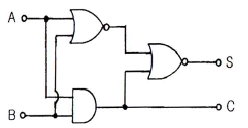
- Counter
- Full Adder
- Exclusive OR
- Half Adder
(정답률: 84%)
19. 다음 논리회로도가 나타내는 카운터는 무엇인가?
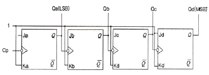
- 4비트 2진 상향카운터
- 4비트 2진 하향카운터
- 4비트 2진 상향/하향카운터
- 4비트 mod-2진 카운터
(정답률: 86%)
20. 전가산기의 블록도로서 옳은 것은?
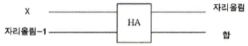
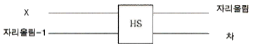
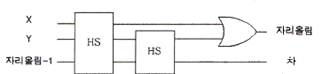
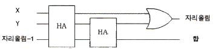
(정답률: 87%)
2과목: 무선통신 기기
21. 주파수 체배기에서 주로 사용하는 바이어스 방법은?
- A급
- AB급
- B급
- C급
(정답률: 70%)
22. 주파수 체배기의 설명 중 맞는 것은?
- 송신 출력을 증가시키기 위하여
- 스퓨리어스의 복사를 막기 위하여
- A급을 주로 이용해서 효율을 개선하기 위하여
- 수정발진기보다 높은 주파수를 얻기 위하여
(정답률: 65%)
23. Walsh Code에 의해 확산된 신호는 변조하기 전에 I, Q채널에 각각의 Short PN 코드를 곱하게 되는데 QPSK 변조에서 이 목적은 무엇인가?
- 호의 설정 과정으로 동기를 맞추기 위해
- 셀과의 간격을 확인하기 위해
- 변조된 신호 순서를 맞추기 위해
- 기지국과 섹터를 구분하기 위해
(정답률: 80%)
24. 위성 통신에서 전자 빔과 진행파 전계와의 상호 작용에 의해 마이크로파 전력을 증폭하는 기능을 하는 것은 무엇인가?
- 진행파관(TWT)
- 클라이스톤(Klystron)
- 자전관(Magnetron)
- 반사기
(정답률: 83%)
25. CDMA 시스템에서의 채널 구분은 Walsh Code를 이용하는데 분류가 맞는 것은?
- 파일롯: Walsh 1, 동기채널: Walsh 64, 페이징: 최대7개, 트래픽: 나머지
- 파일롯: Walsh 0, 동기채널: Walsh 32, 페이징: 최대7개, 트래픽: 나머지
- 파일롯: Walsh 0, 동기채널: Walsh 48, 페이징: 최대7개, 트래픽: 나머지
- 파일롯: Walsh 0, 동기채널: Walsh 32, 페이징: 최대9개, 트래픽: 16
(정답률: 78%)
26. 정지위성에 장착하는 안테나가 갖추어야 할 조건으로 적합하지 않은 것은?
- 고이득일 것
- 저잡음일 것
- G/T가 작을 것
- 광대역성일 것
(정답률: 85%)
27. 다음 중 CDMA 방식의 장점이 아닌 것은?
- 제어와 비화 기술의 적용이 용이하다.
- 주파수 밀도가 감소된다.
- 변ㆍ복조의 동작 속도가 저속이다.
- 다중 경로의 영향이 크게 감소된다.
(정답률: 69%)
28. 수신기의 성능 지수로서 잡음 factor가 있다. 이것에 대한 정의로서 바른 것은? (여기서 G는 수신기 이득, Nint는 수신기 내부잡음, Nin은 수신기 입력잡음, Nout은 수신기 출력잡음)
- SNRout/SNRin
- Nout/(G*Nin)
- Nout/(1+G*Nin)
- 1+Nin/Nint
(정답률: 73%)
29. UPS를 결정할 때 부하가 요구하는 RMS(Root Mean Square) 전류와 순간 피크(Peak) 사이의 비율로 정의하는 것을 무엇이라 하는가?
- 용량
- 부하
- 파고율(Crest Factor)
- 서지율(부하 유입 전류)
(정답률: 75%)
30. 다음 중 전력변환장치가 아닌 것은?
- 인버터(Inverter)
- 컨버터(Converter)
- UPS(Uninterruptible Power Supply)
- 파워 써플라이(Power Supply)
(정답률: 85%)
31. 신호 수신시 초단에서의 증폭이 잡음에 가장 영향을 미친다. 이에 관련되는 소자는?
- Power Amp.
- LNA
- IF Amp.
- AGC Amp.
(정답률: 83%)
32. 다음 중 정류장치에 대한 특성을 해석하는데 이용되는 파라미터가 아닌 것은?
- 맥동율
- 전압변동율
- 정류효율
- 변조도
(정답률: 83%)
33. 다음 그림에서 나타낸 접지안테나에서 L1=10[mH]이고, L2=52[mH]일 때 실효인덕턴스는? (단, f2=(1/2)f1로 조정하였고, f1은 S를 ①로 했을 때 공진주파수, f2는 S를 ②로 했을 때 공진주파수이다.)
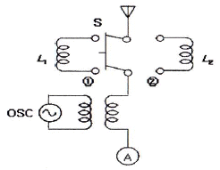
- 4[mH]
- 6[mH]
- 8[mH]
- 10[mH]
(정답률: 62%)
34. 다음 중 FM 송신기의 전력 측정 방법으로 적합하지 않은 것은?
- 열량계에 의한 방법
- C-M형 전력계에 의한 방법
- 수부하에 의한 방법
- 볼로미터 브리지에 의한 방법
(정답률: 86%)
35. 다음 중 수신한계 레벨이 가장 낮은 조건은?
- 대역폭이 넓고 수신기 잡음지수(NF)가 큰 것
- 대역폭이 좁고 수신기 잡음지수(NF)가 작은 것
- 대역폭이 넓고 수신기 잡음지수(NF)가 작은 것
- 대역폭이 좁고 수신기 잡음지수(NF)가 큰 것
(정답률: 69%)
36. 실효높이 20[m]인 안테나에 0.08[V]의 전압이 유기되면 수신되는 전계강도는?
- 3[μV/m]
- 4[μV/m]
- 3[mV/m]
- 4[mV/m]
(정답률: 69%)
37. 무선송신기의 종합 특성을 나타내는 것으로 적합하지 않은 것은?
- 점유주파수대폭
- 스퓨리어스 발사강도
- 주파수 안정도
- 영상주파수 선택도
(정답률: 83%)
38. BPSK의 대역폭 효율이 1일 때 QPSK, 8PSK 및 16QAM에 대한 대역폭 효율은 각각 얼마인가?
- QPSK=1, 8PSK=2, 16QAM=3
- QPSK=2, 8PSK=3, 16QAM=4
- QPSK=3, 8PSK=6, 16QAM=9
- QPSK=4, 8PSK=8, 16QAM=16
(정답률: 86%)
39. CDMA 시스템에서는 기지국으로부터 단말기가 위치한 거리에 따라 수신전계강도(RSSI)가 변화하면 이에 따른 비트오율(BER: Bit Error Rate) 변화 문제가 발생한다. 이를 해결하기 위해 사용되는 기법은 무엇인가?
- 전력제어
- 핸드오버
- 다이버시티
- 인터리빙
(정답률: 53%)
40. 다음 중 전원설비의 측정기기에 대한 설명이 잘못된 것은?
- 전류계는 전원출력단에 직렬로, 전압계는 병렬로 연결한다.
- 전류계는 전원출력단에 병렬로, 전압계는 직렬로 연결한다.
- 전류계는 내부저항이 작아야 한다.
- 전압계는 내부저항이 커야 한다.
(정답률: 78%)
3과목: 안테나 개론
41. 전파의 전파속도에 영향을 미치는 요소로 맞는 것은?
- 유전율과 투자율
- 점도와 유전율
- 투자율과 도전율
- 유전율과 도전율
(정답률: 95%)
42. 아래의 전파 성질에 대한 내용 중 표현이 바르지 못한 것은?
- 굴절률이 서로 다른 매질의 경계 면에서 굴절이 일어난다.
- 전파는 횡파이다.
- 전파는 주파수가 낮을수록 직진한다.
- 균일 매질 중을 전파하는 전파는 직진한다.
(정답률: 82%)
43. 다음 중 전류에 의한 자계의 방향을 나타내는 법칙은 어느 것인가?
- 렌쯔의 법칙
- 암페어의 오른나사법칙
- Stokes 정리
- 패러데이의 법칙
(정답률: 92%)
44. 다음 중 전압반사계수 계산식으로 맞는 것은? (단, Z0=선로의 특성임피던스, ZR=선로의 수전단에 접속한 부하임피던스)
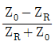
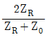
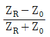
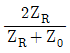
(정답률: 86%)
45. 급전선에 대한 설명 중 가장 적합한 것은?
- 전송 효율이 좋고 정합이 용이해야 한다.
- 특성임피던스는 길이와 관계가 있다.
- 감쇠정수는 특성임피던스와 관계가 없다.
- 무왜곡 조건은 RG=LC로 정의된다.
(정답률: 86%)
46. 비유전율이 2.3인 동축케이블 중 특성임피던스가 가장 적은 것은?
- 내경 2[mm], 외경 1[cm]
- 내경 2[mm], 외경 2[cm]
- 내경 3[mm], 외경 1[cm]
- 내경 3[mm], 외경 2[cm]
(정답률: 77%)
47. 다음 급전선 중 외부잡음의 영향을 가장 적게 받는 것은?
- 단선식
- 평행 2선식
- 평행 4선식
- 동축케이블식
(정답률: 94%)
48. Balun(평형-불평형 변환회로)에 대한 설명으로 옳지 않은 것은?
- 반파장 다이폴을 동축 급전선으로 급전할 때 사용하면 좋다.
- 구성에 따라 집중정수형과 분포정수형이 있다.
- 반파장 다이폴을 평행 2선식 급전선으로 급전할 때 필요하다.
- 안테나의 급전선의 전자계 분포(mode)가 다른 경우에 사용한다.
(정답률: 67%)
49. 공중선에 직렬로 삽입하는 공중선 부하 코일(loading coil)의 기능은?
- 등가적으로 공진파장의 연장
- 등가적으로 공진파장의 단축
- 등가적으로 공진주파수의 증가
- 등가적으로 공진주기의 억제
(정답률: 89%)
50. 미소 다이폴에 관한 설명으로 적합한 것은?
- 길이가 반파장과 거의 같은 다이폴이다.
- 방사전력은
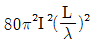
로 나타난다. - H면 지향성과 E면 지향성이 모두 무지향성이다.
- 안테나선로의 전류분포는 정형파 형태이다.
(정답률: 71%)
51. 자유공간에 놓은 수평 반파장 다이폴 공중선의 중앙부의 전류가 10[A]일 때 공중선이 도선과 직각 방향으로 20[km] 떨어진 점의 전계강도는 얼마인가?
- 7.5[mV/m]
- 15[mV/m]
- 30[mV/m]
- 60[mV/m]
(정답률: 64%)
52. 다음 중에서 방사효율이 가장 큰 경우는?
- 손실저항이 10[Ω]인 반파장 다이폴 안테나
- 손실저항이 20[Ω]인 반파장 다이폴 안테나
- 손실저항이 50[Ω]인 반파장 다이폴 안테나
- 손실저항이 73[Ω]인 반파장 다이폴 안테나
(정답률: 86%)
53. 다음 중 야기안테나에 대한 설명으로 적합하지 않은 것은?
- 단방향의 예리한 지향성을 갖는다.
- 도파기 수를 증가하면 광대역성을 갖는다.
- 반사기는 λ/2보다 길게되므로 유도성분을 갖는다.
- 도파기의 길이는 투사기의 길이보다 짧다.
(정답률: 77%)
54. 다음 중 카세그레인 공중선에 대한 설명으로 적합하지 않은 것은?
- 부엽(사이드 로브)이 많다.
- 위성통신용 지구국 고이득 공중선으로 사용된다.
- 1차 방사기(전자나팔)를 주반사기 쪽에 설치한다.
- 누설전력이 천체방향으로 향하기 때문에 대지에서의 잡음을 적게 받는다.
(정답률: 72%)
55. 지표파의 성질 중에서 잘못된 것은?
- 주파수가 높을수록 전파의 감쇠는 크다.
- 안테나의 지상고가 높을수록 지표파 성분이 적다.
- 수평편파가 수직편파보다 감쇠가 많다.
- 대지의 도전율과 유전율에 영향을 받지 않는다.
(정답률: 85%)
56. 실제지구반경(r), 등가지구반경(R), 등가지구 반경계수(K)라고 할 때, 이들은 어떤 관계식을 갖는가?
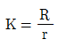
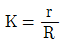
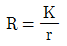
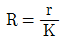
(정답률: 83%)
57. 다음 중 전계강도의 변동폭이 크고 특히 마이크로파대역에서 실용상 문제가 되는 페이딩은 어느 형인가?
- K형
- 신틸레이션형
- 선택형
- 덕트(duct)형
(정답률: 93%)
58. 단파 무선통신에서 페이딩(Fading) 방지 또는 경감방법과 관계가 없는 것은?
- 공간 다이버시티 수신법
- AGC회로 부가
- 톱로딩(Top loading) 공중선
- 주파수 다이버시티 수신법
(정답률: 82%)
59. 동일한 전파가 반사 또는 굴절 등에 의해 둘 이상 서로 다른 통로를 통해 수신점에 도달하는 경우 이들 전파끼리 간섭을 일으켜 발생하는 페이딩은?
- 편파성 페이딩
- 흡수성 페이딩
- 도약성 페이딩
- 간섭성 페이딩
(정답률: 74%)
60. 다음 중 초단파 통신에서 수신점 전계강도에 영향이 가장 적은 것은?
- 사용 주파수
- 통신 거리
- 전리층 높이
- 송수신 안테나의 높이
(정답률: 58%)
4과목: 전자계산기 일반 및 무선설비기준
61. 주기억장치의 용량이 512[KB]인 컴퓨터에서 32비트의 가상주소를 사용하고, 페이지의 크기가 4[kB]면 주기억장치의 페이지 수는 몇 개인가?
- 32
- 64
- 128
- 512
(정답률: 86%)
62. 다음 중 두 개의 입력을 받아서, 합과 자리올림을 구하는 조합논리회로는?
- 인코더
- 디코더
- 반가산기
- 멀티플렉서
(정답률: 86%)
63. 다음 중 운영체제의 제어프로그램이 아닌 것은?
- 작업제어 프로그램
- 감시 프로그램
- 언어번역 프로그램
- 데이터관리 프로그램
(정답률: 70%)
64. 스케줄링 기법에 대한 설명이 틀린 것은?
- 컴퓨터 시스템의 모든 자원의 성능을 높이기 위해 그 사용 순서를 결정하기 위한 정책이다.
- 스케줄링 기법에는 선점형, 비선점형 스케줄링 기법이 있다.
- 선점기법은 프로세스의 응답시간 예측이 용이하다.
- 프로세스의 할당에 대한 방법과 순서를 결정하여 자원의 효율적 이용을 도모하는 것
(정답률: 70%)
65. 인터럽트와 반대되는 개념으로 다른 장치의 상태 변화를 계속 관찰하는 제어 방법을 무엇이라고 하는가?
- arbitration
- polling
- buffering
- first-in first-out
(정답률: 87%)
66. 다음 운영체제의 구성요소 중 사용자 프로세스와 시스템 프로세스들을 생성하거나 삭제하고, 중단시키거나 재개시키는 것은?
- 통신 관리
- 프로세스 관리
- 파일 관리
- 주메모리 관리
(정답률: 87%)
67. 다음의 운영체제 중에서 처리를 요구하는 자료가 발생할 때마다 즉시 처리하는 방식은?
- 오프라인 시스템
- 분산처리 시스템
- 실시간 처리 시스템
- 일괄처리 시스템
(정답률: 90%)
68. 다음 펌웨어에 대한 설명 중 옳은 것은?
- 하드웨어와 소프트웨어의 중간적 성격을 가진다.
- 하드웨어의 교체없이 소프트웨어 업그레이드만으로는 시스템 성능을 개선할 수 없다.
- RAM에 저장되는 마이크로컴퓨터 시스템이다.
- 시스템 소프트웨어로서 응용 소프트웨어를 관리하는 것이다.
(정답률: 82%)
69. 마이크로프로세서 및 하드웨어의 자원을 관리하고 사용자의 입력을 받거나 결과를 출력하는 일을 담당하는 것을 무엇이라 하는가?
- 운영체제
- MMU
- 컴파일러
- BIOS
(정답률: 76%)
70. 어드레스 및 데이터 버스 구조에서 고성능 마이크로프로세서가 주로 사용하였으며, 데이터 버스를 명령어 버스와 데이터 버스로 구분하여 설계한 버스 구조는 다음 중 어느 것인가?
- 이중 버스 구조
- 단일 버스 구조
- 다중 버스 구조
- 하버드 버스 구조
(정답률: 86%)
71. 다음 중 전력선의 고주파전류로 인한 인접 통신설비에 혼신을 방지하기 위한 조건으로 맞는 것은?
- 고주파전류를 통하는 전력선의 분기점에는 전송특성의 필요에 따라 초크코일을 넣을 것
- 고주파전류를 통하는 전력선의 경오는 그 부근에 다른 각종 선로와 무선설비가 많은 곳을 택할 것
- 고주파전류를 통하는 유도식 통신설비의 선로는 가능한 한 다른 전선로와 결합되어야 한다.
- 고주파전류를 통하는 전력선의 경로를 통신선로 설비와 가능한 평행하게 설치되어야 한다.
(정답률: 70%)
72. 무선설비의 안전시설기준에서 고압전기란?
- 600볼트를 초과하는 고주파 및 교류전압과 750볼트를 초과하는 직류전압
- 650볼트를 초과하는 고주파 및 교류전압과 750볼트를 초과하는 직류전압
- 750볼트를 초과하는 고주파 및 교류전압과 750볼트를 초과하는 직류전압
- 750볼트를 초과하는 고주파 및 교류전압과 600볼트를 초과하는 직류전압
(정답률: 83%)
73. “무선설비의 효율적 이용”에 관한 규정을 설명한 것으로 잘못된 것은?
- 타인에게 임대할 수 있다.
- 타인에게 위탁 운용할 수 있다.
- 타인과 공동 사용할 수 있다.
- 타인에게 판매할 수 있다.
(정답률: 83%)
74. 방송통신위원회가 전파이용기술의 표준화를 추진하는 목적으로 볼 수 없는 것은?
- 전파의 효율적인 이용 촉진
- 전파 이용 질서의 유지
- 전파 이용자 보호
- 전파 이용 중ㆍ장기 계획수립
(정답률: 67%)
75. 지정 공중선전력을 500[W]로 하고, 허용편차가 상한 5[%], 하한 10[%]인 방송국이 실제로 전파를 발사하는 경우에 허용될 수 있는 공중선의 전력은?
- 450~550[W]
- 450~525[W]
- 475~550[W]
- 475~525[W]
(정답률: 88%)
76. 산업용 전파응용설비의 전계강도 최대 허용치로서 맞는 것은?
- 100[m] 거리에서 100[μV/m] 이하일 것
- 30[m] 거리에서 100[μV/m] 이하일 것
- 50[m] 거리에서 100[μV/m] 이하일 것
- 100[m] 거리에서 50[μV/m] 이하일 것
(정답률: 76%)
77. “다른 무선국의 정상적인 운용을 방해하는 전파의 발사ㆍ복사 또는 유도”를 무엇이라 말하는가?
- 잡음
- 간섭
- 혼신
- 전파장애
(정답률: 76%)
78. 무선국이 하는 업무와 무선국의 분류는 다음 중 무엇으로 정하는가?
- 방송통신위원회 고시
- 대통령령
- 국토해양부령
- 전파연구소장
(정답률: 84%)
79. 다음 중 무선국의 개설허가의 유효기간이 1년인 무선국은?
- 실험국
- 기지국
- 간이무선국
- 선상통신국
(정답률: 77%)
80. 공중선 전력이 몇 와트를 초과하는 무선서비에 사용하는 전원회로에는 퓨즈 도는 자동차단기를 갖추어야 하는가?
- 70와트
- 50와트
- 30와트
- 10와트
(정답률: 71%)